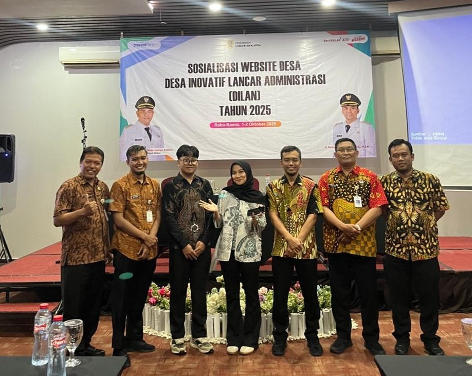

10/2025 - 12/2026
Full Stack Developer
Dinas Komunikasi dan Informatika Kabupaten Klaten
Bertanggung jawab menganalisis kebutuhan sistem, merancang dan mengembangkan antarmuka aplikasi berbasis web menggunakan Laravel, HTML, CSS, JavaScript, dan Bootstrap. Mengimplementasikan fitur perhitungan otomatis pada formulir pengajuan keuangan, mengintegrasikan data dengan database, serta mengembangkan fitur penyimpanan dan pencetakan Surat Bukti Pengeluaran (SBK).